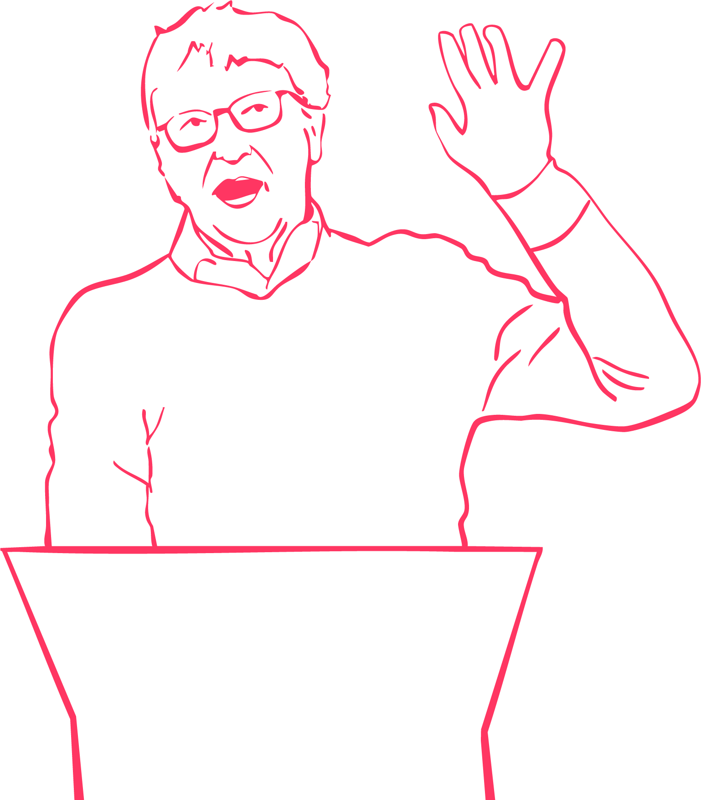

A few weeks ago, I joined a small group of reporters for a wide-ranging conversation with Bill Gates about climate change, its causes and potential solutions. When the topic turned to the issue of just how much energy artificial intelligence was using, Gates was surprisingly sanguine.
“Let’s not go overboard on this,” he said during a media briefing on the sidelines of an event he was hosting in London.
A.I. data centers represent a relatively small additional load on the grid, Gates said. What’s more, he predicted that insights gleaned from A.I. would deliver gains in efficiency that would more than make up for that additional demand.
In short, Gates said, the stunning rise of A.I. will not stand in the way of combating climate change. “It’s not like, ‘Oh no, we can’t do it because we’re addicted to doing chat sessions,’” he said.
That’s an upbeat assessment from a billionaire with a vested interest in the matter. Gates is a big-time climate investor, and is the former head of Microsoft and remains a major stockholder in the company, which is at the center of the A.I. revolution.
And while it’s too early to draw a definitive conclusion on the issue, a few things are already clear: A.I. is having a profound impact on energy demand around the world, it’s often leading to an uptick in planet-warming emissions, and there’s no end in sight
A.I. is having a profound impact on energy demand around the world, it’s often leading to an uptick in planet-warming emissions, and there’s no end in sight
